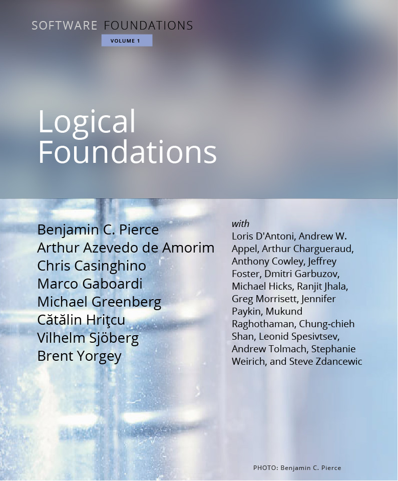

このページは Software Foundations の日本語翻訳版「ソフトウェアの基礎」です。
「ソフトウェアの基礎(Software Foundations)」シリーズでは、高信頼ソフトウェアに関する広範囲の数学的基礎を学びます。
このシリーズは3巻構成になっています。 他の巻の基盤となる知識を学ぶ「論理の基礎」、プログラミング言語理論について学ぶ「プログラミング言語の基礎」、そしてデータ構造とアルゴリズムについて学ぶ「検証済み関数型アルゴリズム」です。 本シリーズの特徴は各巻の内容が全て機械的に検証されていることです。 これは、全てを定理証明支援系Coqのスクリプトとして記述することにより達成されています。
| 第 1 巻 |
|
「論理の基礎」ではこのシリーズの基本となる概念について学びます。この中には関数型プログラミング、論理の基本概念、定理証明支援系、そしてCoqが含まれます。  |
| 第 2 巻 |
|
「プログラミング言語の基礎」では操作的意味論、ホーア論理、静的型システムなどのプログラミング言語理論について学びます。 |